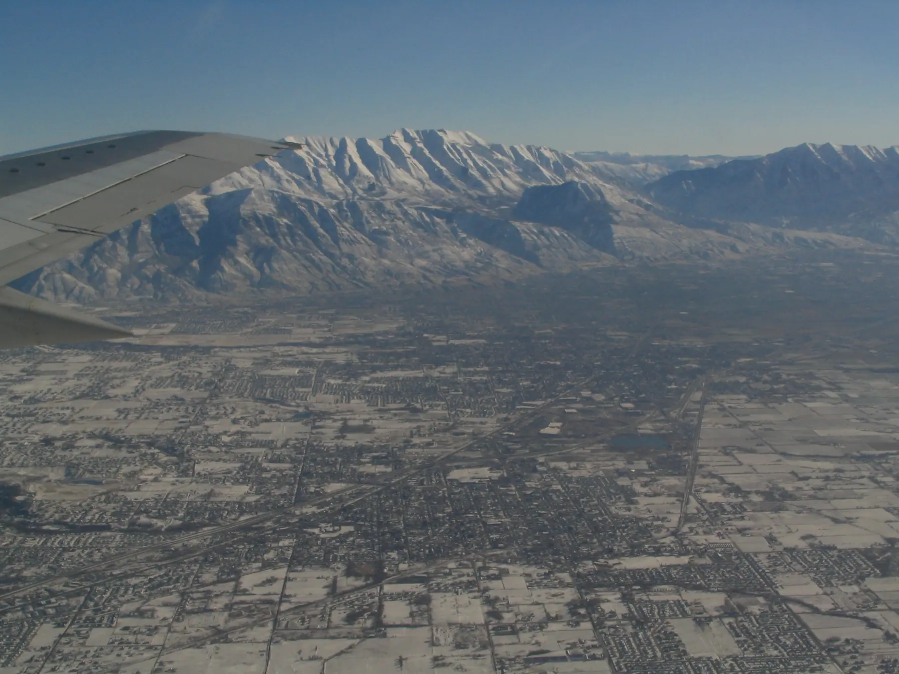

Lehi, Utah · 1650 Digital Dr
Roofing company in Lehi, ready for winter.
Conrad’s Roofing & Construction is a roofing company in Lehi, Utah, at 1650 Digital Dr. Before the snow piles up, or after it does damage, call and talk it through.
Mount Timpanogos and Utah Valley · Ken Lund, CC BY-SA 2.0, via Wikimedia Commons
Roofing & construction
Roofs that carry Utah winters.
- Phone
- 435-375-3396
- Lehi
- 1650 Digital Dr
Lehi, UT 84043 - Trade
- Roofing contractor
Snow is weight. A foot of light powder and a foot of old, packed snow can put very different loads on the same roof, and ice is heavier still. Conrad’s Roofing & Construction works from Lehi, at the north end of Utah Valley.
The calculator below turns what’s on your roof into pounds per square foot, using the rules of thumb emergency managers publish. It’s a way to decide when to worry and when to call, not a structural rating.
Snow load calculator
How heavy is the snow up there?
Estimate the depth of each layer on your roof. We convert it with the equivalences IBHS uses and compare it with the 20 pounds per square foot IBHS estimates a typical roof can handle.
About 5 lb per square foot
Well under a typical roof’s estimate.
Equivalences from IBHS via Maine Emergency Management Agency, “Removing Snow from Roofs”: 10–12 inches of new snow, or 3–5 inches of old snow, equals about 1 inch of water, about 5 lb per sq ft; 1 inch of ice is about 5 lb per sq ft. We use the middle of each range. Older roofs may handle less than 20 psf. Nothing you type leaves this page.
Warning signs
When the roof is telling you something
Sagging
FEMA lists sagging ceiling boards, sagging roof members and bowing trusses among the warning signs of an overstressed roof.
Sounds
Popping, cracking and creaking noises during a heavy snow are on FEMA’s list too.
Sticking doors
FEMA also lists doors or windows that can no longer be opened or closed.
Cracks and leaks
Cracks in walls or masonry, cracked or split wood members, and severe roof leaks. If you see any of these, FEMA says to leave the building and get a professional to inspect it.
Source: FEMA P-957, Snow Load Safety Guidance (2014). Don’t climb onto a snowy roof; FEMA says snow removal should only be done by qualified people.
Questions
Good to know
From the blogHow much snow can a roof hold? Weights, warning signs and safe removalIBHS’s rules of thumb for snow weight, FEMA’s warning signs, and how to clear snow safely.
Read it01Where is Conrad’s Roofing & Construction?
1650 Digital Dr, Lehi, UT 84043.
02How do I reach you?
Call 435-375-3396, or send the form on the contact page.
03How much snow can a roof hold?
IBHS estimates a typical roof can handle about 20 pounds per square foot of extra weight, less for older roofs. That’s roughly 4 feet of new snow or 2 feet of old, packed snow, by its rules of thumb.
04Should I shovel my roof?
FEMA and Maine Emergency Management both warn that snow removal from roofs is dangerous. Use a roof rake from the ground for small amounts, and leave anything that requires climbing to professionals.
Contact us
Roof questions in Lehi? Call Conrad’s.
Call Conrad’s Roofing & Construction at 435-375-3396. 1650 Digital Dr, Lehi, UT 84043.
Contact us